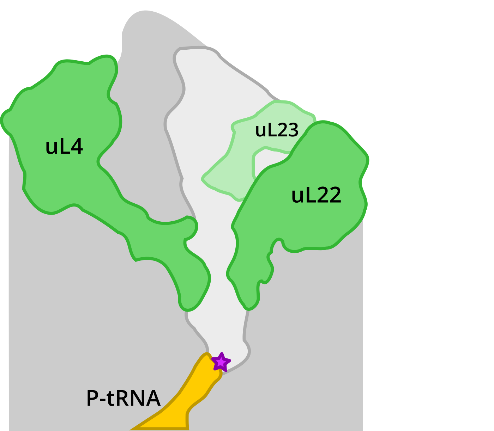

contributed talk given at MDAnalysis User Group Meeting, King's College London, UK
Created using Reveal.js.
Use the right arrow to start browsing the slides.


Vibrio alginolyticus
Vibrio Export Monitoring Polypeptide (VemP)
photo courtesy: Dr. Gary Gaugler, Visuals Unlimited, Inc.
Simulations
- GROMACS 2019
- Amber12sb + SPC/E water
- CHARMM36m + TIP3P water
- four independent trajectories in ribosome (1500 ns/traj)
- eight independent trajetories in water (4000 ns/traj)
Analysis
- MDAnalysis to interface between Gromacs and Python
- PDB and XTC file formats
- PDB with ca 150k non-hydrogen atoms
- segid selection keyword critical
Structure
Dynamics

take this home:
Folding of VemP into translation-arresting secondary structure is driven by the ribosome exit tunnel



Simulations
- GROMACS 2019
- Amber12sb + SPC/E water
- four independent simulations for PDF+ and PDF−
- 1000 ns/traj
Analyses
- Functional Mode Analysis by Hub et al. PMID 19714202
- built on top of PCA module of MDAnalysis
- later combined with scikit-learn
- major bottleneck was handling large XTC files


Prediction accuracy

take this home:
The presence or absence of PDF can be predicted from conformations of distant ribosome parts.
take this home:
Binding of the peptide deformylase on the ribosome surface modulates the exit tunnel interior.
Structural analysis